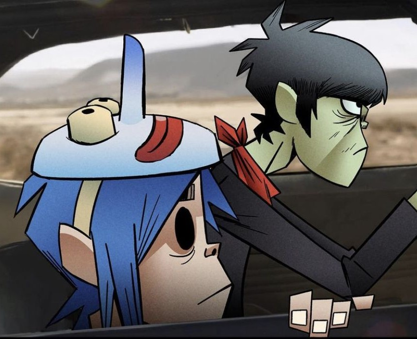

01 / LOS PRIMEROS ACCIDENTES
El encuentro de Murdoc y 2-D
Murdoc Niccals tenía una ambición: formar una banda y convertirse en una estrella de rock. Sin embargo, su camino hacia ese objetivo comenzó de una manera bastante caótica.
Una serie de accidentes lo llevó a conocer a Stuart Pot, quien terminaría convirtiéndose en el vocalista de la banda y adoptando el nombre de 2-D.